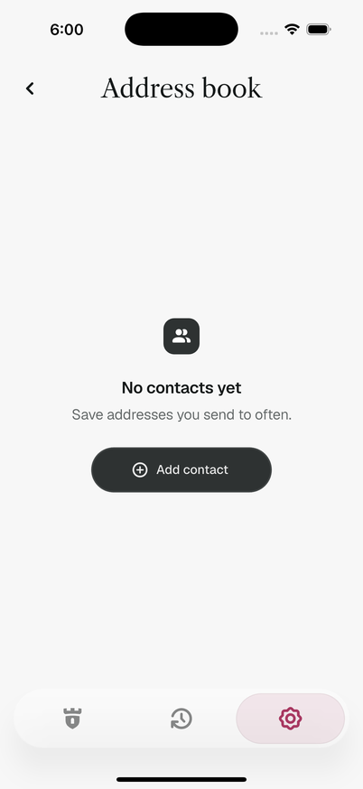
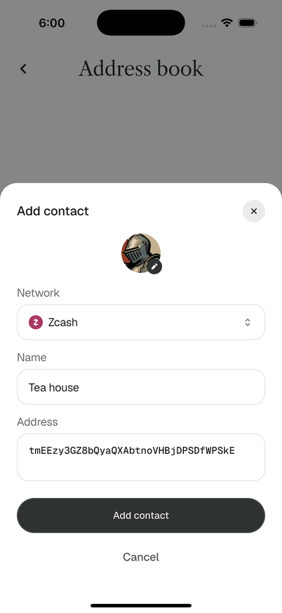
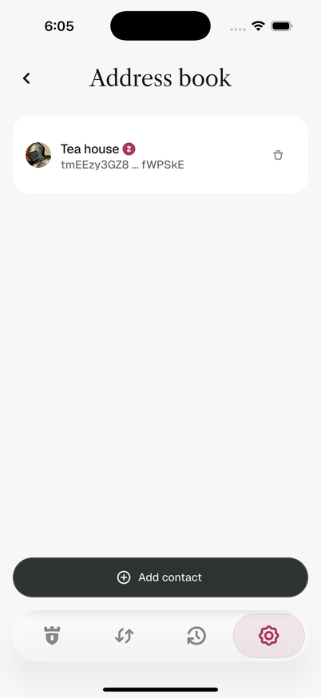
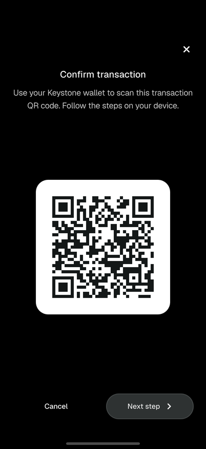
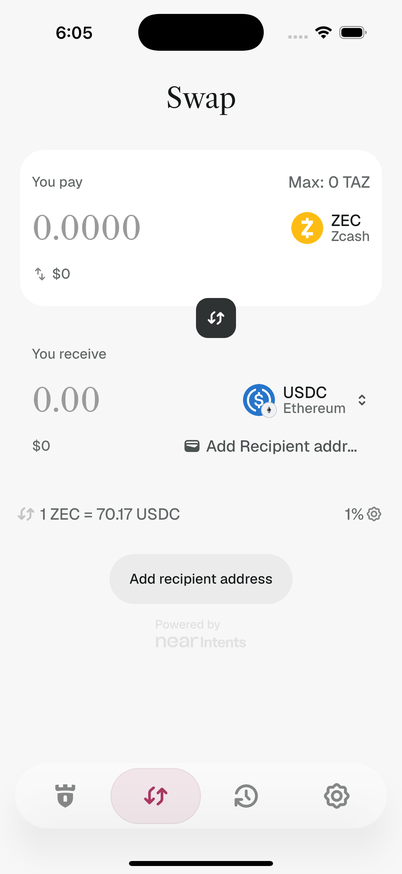
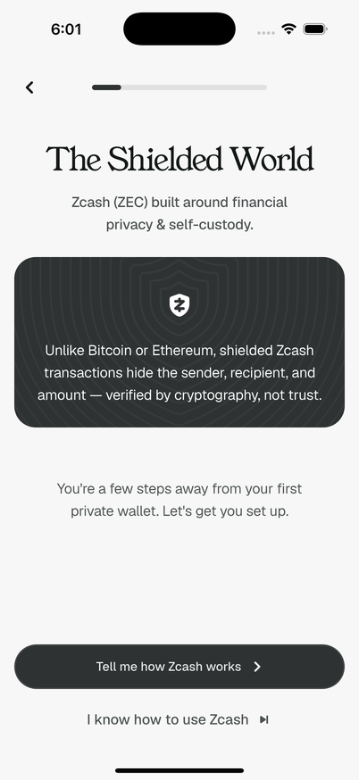
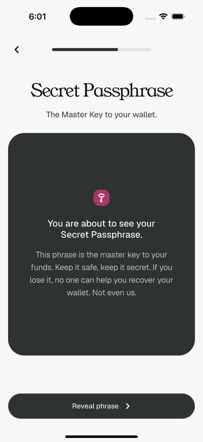
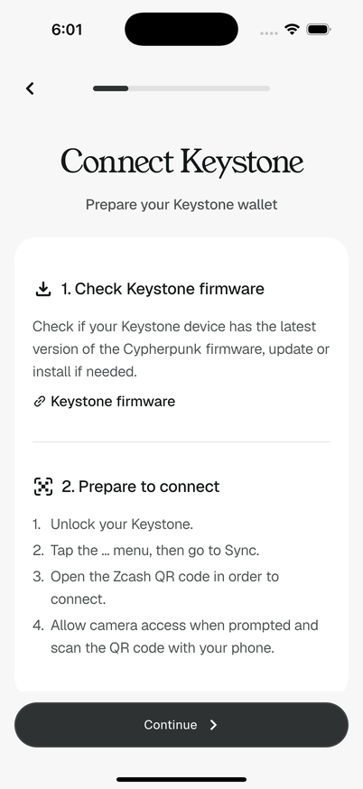
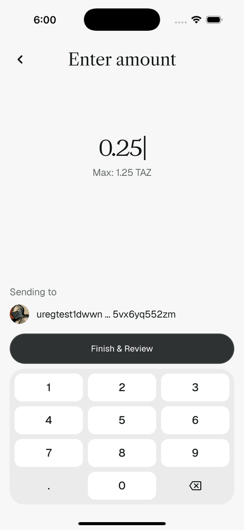

피그마 Mobile App WIP에 프레임이 없거나 모호해서 구현하며 채워 넣은 디자인
요소들입니다. 각 항목에 채워 넣은 이유, 잡은 디자인 방향, 그리고 디자이너에게 요청하고 싶은
것을 정리했습니다. 스크린샷은 모두 실제 앱(iPhone 16 Pro 시뮬레이터, regtest)을 캡처한
것입니다.
브랜치 mobile-ui-vibe-coding-polishing · 2026-06-12
1. 모바일 주소록 화면
신규 화면피그마: 설정 row만 존재
왜 추가했나
피그마 Settings 프레임에 "Address Book" row(셰브론 포함)는 있지만 화면 자체의
프레임이 없습니다. 데스크톱에는 멀티 네트워크 주소록이 이미 구현돼 있고, 모바일 송금
플로우의 연락처 선택이 같은 데이터를 쓰고 있어 모바일에도 관리 화면이 필요했습니다.
채운 디자인 방향
데스크톱 주소록의 동작(네트워크 선택, 라벨/주소 입력, 주소 형식 검증, EVM 체인 호환
규칙)을 그대로 따르되, UI는 모바일 설정 화면의 관용구로 옮겼습니다 — 서피스 카드 리스트,
하단 고정 "Add contact" CTA, 추가/편집/삭제는 모두 바텀시트. 행 구성은 아바타 + 라벨 +
네트워크 아이콘 + 축약 주소 + 휴지통 아이콘입니다. 빈 상태 카피는 "No contacts yet /
Save addresses you send to often."으로 새로 썼습니다.
디자이너에게 요청
주소록 리스트 / 빈 상태 / 추가·편집 시트 / 삭제 확인 시트의 정식 프레임
네트워크 픽커 시트(20개 이상 네트워크 스크롤 리스트)의 디자인
빈 상태 일러스트 여부와 카피 검토

빈 상태

추가 시트 (네트워크/이름/주소)

연락처 리스트 + 고정 CTA
2. Keystone 모바일 서명 플로우 (하드웨어 전송)
신규 플로우피그마: Keystone Scan Windget / Scan Error (상태 합성 목업)
왜 추가했나
하드웨어(Keystone) 계정의 모바일 전송은 지금까지 미지원 시트로 막혀 있었습니다.
피그마의 Keystone Scan Windget 프레임은 "QR 표시"와 "카메라 스캔"이 한 장에
겹쳐 그려진 목업이라, 실제 플로우의 단계 구분(폰이 QR을 보여주는 단계 ↔ 기기의 서명
QR을 읽는 단계)이 정의돼 있지 않았습니다.
채운 디자인 방향
물리적인 순서(기기가 폰 화면을 스캔 → 폰이 기기 화면을 스캔)에 따라 2단계로
풀었습니다. 1단계: 검은 풀스크린 위에 "Confirm transaction" 타이틀 + 안내문 +
흰 라운드 카드의 애니메이션 QR(PCZT를 UR 조각으로 순환 표시), 하단 Cancel / "Next step".
2단계: 송금 주소 스캐너와 같은 풀블리드 카메라 + 코너 브래킷 뷰파인더 + 멀티파트
수신 진행률(%) + "Show QR" 복귀 버튼. 프레임에 있던 요소(토치, ✕, 캡션, Cancel/Next step)는
모두 유지했습니다.
디자이너에게 요청
두 단계 각각의 확정 프레임 (1단계 QR 카드 크기/타이포, 2단계 스캔 진행률 표현)
스캔 에러 상태 ("Unexpected UR type", 흔들림 등)와 디코딩 중 상태의 디자인
서명 준비(증명 생성) 대기 상태 — 현재는 QR 카드 자리에 로더만 표시

1단계 — PCZT 애니메이션 QR 표시
3. 모바일 스왑 — 리뷰 / 인텐트 상세 화면, 컴포저 입력 방식
신규 화면 2종피그마: 컴포저 프레임만 존재 (Swap / Swap v1)
왜 추가했나
스왑은 컴포저에서 끝나지 않습니다 — 견적 리뷰(/swap/review), 그리고 인텐트 시작 후
예치 서명·상태 추적이 일어나는 인텐트 상세(/activity/swap/:id)가 있어야 플로우가
완결됩니다. 피그마에는 컴포저 프레임 두 장만 있습니다.
채운 디자인 방향
리뷰와 인텐트 상세는 데스크톱과 동일한 공유 서피스(400pt 폭)를 모바일 내비게이션
안에 그대로 호스팅했습니다(402pt 폰에는 원래 크기로 들어가고, 더 좁은 기기는 비율
축소). 컴포저도 데스크톱의 티켓 레이아웃(시스템 키보드 입력)을 재사용했는데, 피그마
모바일 프레임은 전용 세리프 숫자 키패드를 보여주고 있어 입력 방식이 다릅니다.
디자이너에게 요청
모바일 전용 리뷰 프레임과 인텐트 상세(상태/예치/클레임) 프레임
컴포저 입력 방식 결정 — 피그마의 세리프 키패드 vs 현재의 시스템 키보드.
키패드로 간다면 금액/피아트 토글, Max 버튼 위치 포함 프레임 요청
자산 선택·슬리피지·수신 주소 모달의 모바일 폭(현재 312pt 데스크톱 모달 재사용) 검토

현재 구현 — 공유 컴포저 + 모바일 탭
4. 온보딩 진행바의 단계별 채움 규칙
동작 규칙피그마: 모든 프레임 31% 고정
왜 추가했나
피그마의 Steps 내비게이션 컴포넌트는 모든 프레임에서 채움이 31%로 고정돼 있습니다
(정적 인스턴스). 실제 앱에서는 단계가 진행되는 느낌이 필요해 규칙을 정해 구현했습니다.
채운 디자인 방향
생성 플로우(5단계)는 단계 / (단계수 + 1) — 첫 단계도 비어 보이지 않고
마지막 단계도 가득 차 보이지 않게. Keystone 온보딩은 0.2 → 0.4 → 0.6으로 진행합니다.
아래 두 캡처에서 1단계(인트로)와 4단계(패스프레이즈)의 채움 차이를 볼 수 있습니다.
디자이너에게 요청
단계별 채움 규칙의 공식 확정 (또는 다른 진행 표현 — 세그먼트형 등 — 으로 교체 여부)

생성 1단계 (1/6 채움)

생성 4단계 (4/6 채움)

Keystone 1단계 (0.2 채움)
5. Keystone 계정 배지의 적용 표면 확장
컴포넌트 적용 확장피그마: Accounts 행에만 존재
왜 추가했나
피그마에는 User Keystone Badge(20px)가 Accounts 화면의 계정 행에만
배치돼 있습니다. 하지만 사용자가 "지금 보고 있는 계정이 하드웨어 계정인지"를 알아야
하는 표면은 더 많습니다.
채운 디자인 방향
데스크톱의 배지 패턴(아바타 우하단, 다크 라운드 사각 + 표면색 2px 링)을 공용
컴포넌트로 만들어 네 곳에 적용했습니다 — ① 계정 관리 화면 행 ② 계정 삭제 확인 시트
③ 계정 전환 시트(행 + 중앙 아바타) ④ 홈 좌상단 계정 칩. 링 색은 배지가 올라가는
표면색(카드/시트는 흰색, 홈 배경은 윈도 색)을 따릅니다.
디자이너에게 요청
표면·아바타 크기별 배지 스펙 확정 (홈 칩 40px 아바타, 시트 56px 아바타 등)
다크 모드에서의 배지/링 색 정의
6. 송금 금액 검증 대기 상태
상태 추가피그마: 에러 상태만 존재 (Send Amount Error)
왜 추가했나
금액 입력 시 수수료 추정이 비동기로 돌아오는데, 그 사이에 Continue를 누르면 검증되지
않은 금액이 리뷰로 넘어가는 문제가 있었습니다. 추정이 끝날 때까지 Continue를 비활성화하는
"검증 중" 상태를 추가했는데, 피그마에는 이 상태의 디자인이 없습니다(에러 상태인
"Not enough ZEC"만 존재).
채운 디자인 방향
현재는 별도 시각 표현 없이 버튼만 비활성 상태로 둡니다. 수수료 추정은 보통 수백 ms
안에 끝나서 깜빡임을 피하려는 의도지만, 네트워크가 느릴 때는 "왜 버튼이 안 눌리지?"가
될 수 있습니다.
디자이너에게 요청
검증 중 상태의 표현 (버튼 내 스피너, 금액 아래 보조 문구 등) 필요 여부 결정

금액 입력 화면 (참고)
7. 생체인증(Face ID) 설정 행 · 넘패드 글리프
신규 행/글리프피그마: 잠금·온보딩 프레임만 존재
왜 추가했나
Face ID 잠금 해제를 구현하면서(패스코드 에스크로 방식) 두 가지 표면이 디자인 없이
필요해졌습니다. ① 활성/비활성을 전환할 설정 행 — 피그마 Settings 프레임에 생체인증
항목이 없습니다. ② 잠금 화면 넘패드의 수동 재시도 키 — 디자인의 Sign In Face ID
프레임은 시스템 프롬프트만 보여주고, 취소 후 다시 시도할 진입점이 없습니다.
채운 디자인 방향
설정 행은 System 그룹에 "Face ID — On/Off" 값 행으로 추가했고(생체 하드웨어 없는
기기에선 숨김), 넘패드 재시도 키는 입력 전 비어 있는 우하단 슬롯(삭제 키 자리)에 머티리얼
Face ID/지문 아이콘을 임시로 넣었습니다. 디자인 시스템에 Face ID/지문 글리프가 없어
임시 아이콘입니다.
디자이너에게 요청
설정의 생체인증 행(켜짐/꺼짐 표현 — 값 텍스트 vs 토글 스위치) 디자인
디자인 시스템용 Face ID·지문 글리프 (넘패드 슬롯 + 설정 행 아이콘 공용)
생체 재등록으로 에스크로가 무효화됐을 때의 안내 문구/표현 ("Biometrics changed.
Enter your passcode." 임시 적용 중)
8. Birthday 입력 방식 정정
동작 정정피그마: 커스텀 키패드로 그려짐 (정정 필요)
무엇이 바뀌었나
피그마 Import — Calendar 계열 프레임은 화면 하단에 커스텀 숫자 키패드를
그려 두었지만, 이는 잘못된 접근으로 확인되어 구현을 다음과 같이 정정했습니다:
날짜 선택은 필드처럼 보이는 컴포넌트를 탭하면 곧바로 캘린더 다이얼로그가 열리고
직접 타이핑은 불가능합니다(캘린더가 유일한 입력 경로). 블록 높이는 시스템 숫자
키보드를 쓰는 일반 텍스트 필드입니다. 커스텀 키패드는 이 화면에서 제거됐습니다.
캘린더 다이얼로그의 플랫폼별 처리
iOS는 OS 네이티브 캘린더 시트(UICalendarView, 앱 테마의
라이트/다크와 액센트 컬러를 따름)를 띄우고, Android는 인앱 캘린더를 콘텐츠 높이에
맞는 바텀 시트로 띄웁니다(화면 전체를 덮지 않음). 두 플랫폼 모두 날짜 탭 즉시
시트가 닫히고 필드가 채워집니다.
디자이너에게 요청
프레임의 커스텀 키패드를 제거하고 두 모드의 정정된 동작(탭→캘린더 / 시스템 키보드)을
반영한 업데이트
날짜 선택 후 필드의 표시 형식(현재 MM/DD/YYYY) 확정
Android용 인앱 캘린더 바텀 시트 디자인 확정 — iOS는 네이티브 시트라 별도
디자인이 필요 없습니다